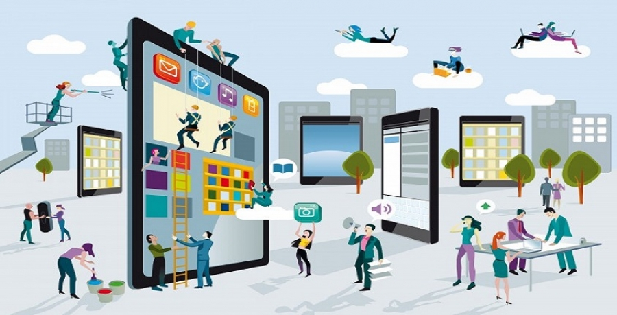

En la era digital, la educación ha experimentado una transformación significativa con la incorporación
de tecnologías multimedia. Las herramientas interactivas, las plataformas de aprendizaje en línea y los
videojuegos educativos han revolucionado la manera en que los estudiantes adquieren conocimientos.
Sin embargo, el uso de estas tecnologías también plantea desafíos que deben ser considerados para su
implementación efectiva. En este ensayo, se analizarán los diferentes tipos de aplicaciones multimedia
en la educación, sus beneficios y las dificultades que pueden surgir en su uso.
Las herramientas multimedia en el ámbito educativo facilitan la enseñanza y el aprendizaje al combinar
diversos medios que captan la atención de los estudiantes y mejoran la comprensión de los contenidos.
Ejemplos incluyen plataformas de aprendizaje en línea, simulaciones interactivas y recursos educativos
digitales que permiten una educación más dinámica y accesible.


En la era digital, la educación ha experimentado una transformación significativa con la incorporación
de tecnologías multimedia. Las herramientas interactivas, las plataformas de aprendizaje en línea y los
videojuegos educativos han revolucionado la manera en que los estudiantes adquieren conocimientos.
Sin embargo, el uso de estas tecnologías también plantea desafíos que deben ser considerados para su
implementación efectiva. En este ensayo, se analizarán los diferentes tipos de aplicaciones multimedia
en la educación, sus beneficios y las dificultades que pueden surgir en su uso.
Las herramientas multimedia en el ámbito educativo facilitan la enseñanza y el aprendizaje al combinar
diversos medios que captan la atención de los estudiantes y mejoran la comprensión de los contenidos.
Ejemplos incluyen plataformas de aprendizaje en línea, simulaciones interactivas y recursos educativos
digitales que permiten una educación más dinámica y accesible.
Uno de los aspectos más relevantes de las aplicaciones multimedia en la educación es la capacidad de personalizar el aprendizaje. Plataformas como Moodle, Coursera y EdX han demostrado ser herramientas efectivas para la educación a distancia, permitiendo que los estudiantes accedan a contenido adaptado a su ritmo y estilo de aprendizaje. Además, la interactividad de las aplicaciones educativas como Duolingo y GeoGebra facilita la comprensión de conceptos complejos, especialmente en áreas como los idiomas y las matemáticas.


Otro aspecto fundamental es el uso de simulaciones educativas y realidad virtual. Estas tecnologías permiten a los estudiantes experimentar situaciones que serían imposibles o peligrosas en un aula tradicional. Por ejemplo, en el campo de la medicina, las simulaciones de cirugía ayudan a los estudiantes a practicar procedimientos sin poner en riesgo la vida de un paciente. De manera similar, la realidad aumentada ha demostrado ser útil en la enseñanza de la historia y la geografía, proporcionando experiencias inmersivas que aumentan la retención del conocimiento.
La gamificación también ha demostrado ser una estrategia eficaz para mejorar la motivación de los estudiantes. Herramientas como Kahoot! y Minecraft: Education Edition han integrado mecánicas de juego en la educación, incentivando la participación activa y el pensamiento crítico. Sin embargo, es importante que la gamificación sea diseñada con un propósito pedagógico claro, evitando que se convierta en una simple distracción.
No obstante, a pesar de los beneficios evidentes, el uso de aplicaciones multimedia en la educación enfrenta varios desafíos. La brecha digital sigue siendo un obstáculo significativo, ya que no todos los estudiantes tienen acceso a tecnología avanzada o conexión a internet de alta velocidad. Además, los docentes requieren capacitación para integrar eficazmente estas herramientas en su metodología de enseñanza. Otro aspecto preocupante es la privacidad de los datos, ya que muchas plataformas recopilan información personal de los usuarios.